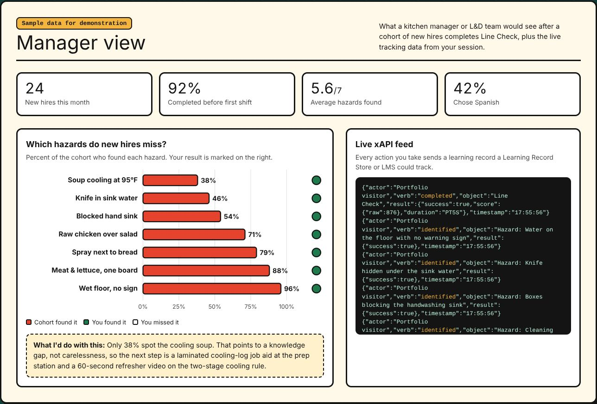

Line
Check
A three-minute food-safety game for new restaurant staff. Learners walk a 3D kitchen before doors open and flag every hazard they find, in English or Spanish, on a laptop or a phone.

The problem
New kitchen staff often start working before they finish formal food-handler training. Onboarding is a binder in English, read once, if at all. Meanwhile, health inspections keep finding the same issues: food cooling too slowly, raw meat stored above ready-to-eat food, blocked handwashing sinks.
Learning objectives
- Recognize seven common food-safety and workplace hazards in a working kitchen.
- Distinguish real hazards from correct practices that look similar, such as a labeled container or a properly stored sanitizer bucket.
- Explain the correct fix for each hazard, including the two-stage cooling rule and refrigerator storage order.
Skills this project shows
I built Line Check to stretch past what most instructional design portfolios include.
Key design decisions
Distractors that look like hazards
Six objects are correct practice: a labeled container, a mounted extinguisher, a pan with its handle turned in. Flagging them costs points and explains why they're fine.
Why: new hires need to tell right from wrong, not just hunt for anything unusual.
Hints that move the camera
After 40 seconds without a find, "Ask Chef Rosa" appears. Her hint flies the camera toward an unfound hazard without naming it.
Why: scaffolding keeps struggling learners moving without giving away the answer.
Data that changes the design
The sample dashboard shows only 38% of new hires spot the cooling soup. The recommended response is a job aid at the prep station, not more training for everyone.
Why: analytics are only useful if they lead to a decision. I show what the decision would be.
A look borrowed from the kitchen
The interface is built from things a cook sees every shift: order tickets on a rail, a printed receipt for the score, checkered quarry tile.
Why: familiar visuals lower anxiety and make the game feel like part of the job, not a compliance task.
A deliberately different design language
Spot the Phish is calm and corporate. Line Check is loud on purpose: chunky outlines, hard shadows, a playful display face, and a palette pulled from a busy kitchen.

How I'd measure success
What I'd do next
- Connect the xAPI statements to a real Learning Record Store.
- Add a second level, the walk-in cooler, with temperature-log decisions.
- Test the Spanish version with native-speaking kitchen staff and refine the vocabulary.